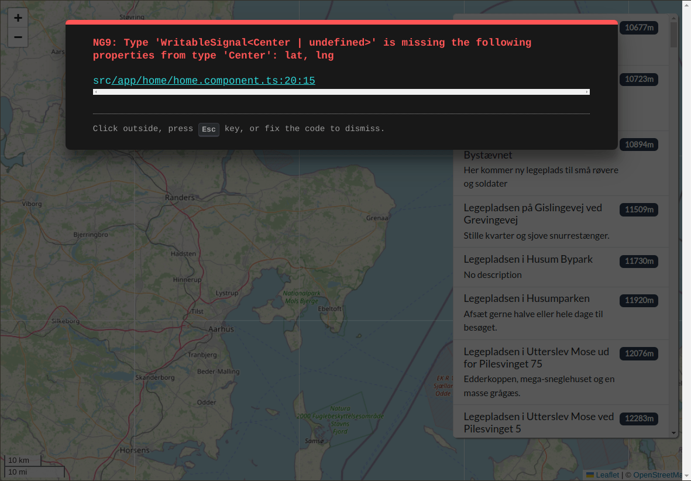

Looking at the source code in home.component.ts we'll see that we are currently using plain data types, such as Center, Marker, arrays etc.
Change all the instance variables, except router, into signals.
When you have changed the variables into signals you will have some compile errors. Fix these errors. Then fix every NG8109 warning in the terminal too. Its suggested fix has a stray }: write playgrounds(), not playgrounds()}.
A blank page means a missing () in the template, e.g. @if (playground).
Did you notice the loader? If not, reload the page. When you see the loader you are ready for the next part of the exercise
